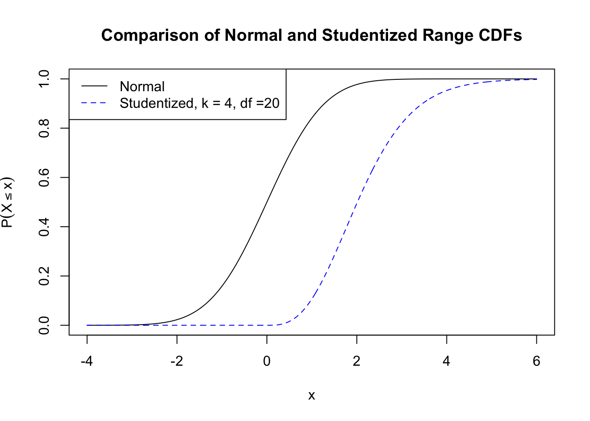

Course Documents
Class Slides and Documents
Class slides and documents will be posted here.
Week 1
Week 3
Sept. 19
Live coding demo from class examined each line from the R code below.
library(BHH2)
data(shoes.data)
shoes.data
diff <- shoes.data$matA-shoes.data$matB
N <- 2^(10) # number of treatment assignments
res <- numeric(N) #vector to store results
LR <- list(c(-1,1)) # difference is multiplied by -1 or 1 # generate all possible treatment assign
trtassign <- expand.grid(rep(LR, 10))
for (i in 1:N) {
res[i] <- mean(as.numeric(trtassign[i,])*diff) }
trtassign[1:2,]
trtassign
dim(trtassign)
meandiff <- mean(diff)
res <= meandiff
sum(res <= meandiff)Week 5
Week 6
Oct. 8
Midterm test #1
Oct. 10
Background on Angrist and Lavy Study
Wikepia article on Maimonides’ Rule
Using Maimonides’ Rule to Estimate the Effect of Class Size on Scholastic Achievement
Week 7
Oct. 17
The data used in class from NHEFS Survey is available nhefshw2dat.csv. The R code to read the data into an R data frame, and create the covariates used in the analyses done in class is below.
# Read the data into a data frame
#
nhefshwdat <- read.csv("nhefshw2dat.csv")
# Define the variables used in the propensity score model
#
years1 <- mean(nhefshwdat$age[nhefshwdat$qsmk == 1])
years0 <- mean(nhefshwdat$age[nhefshwdat$qsmk == 0])
male1 <- 100 * mean(nhefshwdat$sex[nhefshwdat$qsmk == 1] == 0)
male0 <- 100 * mean(nhefshwdat$sex[nhefshwdat$qsmk == 0] == 0)
white1 <- 100 * mean(nhefshwdat$race[nhefshwdat$qsmk == 1] == 0)
white0 <- 100 * mean(nhefshwdat$race[nhefshwdat$qsmk == 0] == 0)
university1 <- 100 * mean(nhefshwdat$education.code[nhefshwdat$qsmk == 1] == 5)
university0 <- 100 * mean(nhefshwdat$education.code[nhefshwdat$qsmk == 0] == 5)
kg1 <- mean(nhefshwdat$wt71[nhefshwdat$qsmk == 1])
kg0 <- mean(nhefshwdat$wt71[nhefshwdat$qsmk == 0])
cigs1 <- mean(nhefshwdat$smokeintensity[nhefshwdat$qsmk == 1])
cigs0 <- mean(nhefshwdat$smokeintensity[nhefshwdat$qsmk == 0])
smoke1 <- mean(nhefshwdat$smokeyrs[nhefshwdat$qsmk == 1])
smoke0 <- mean(nhefshwdat$smokeyrs[nhefshwdat$qsmk == 0])
noexer1 <- 100 * mean(nhefshwdat$exercise[nhefshwdat$qsmk == 1] == 2)
noexer0 <- 100 * mean(nhefshwdat$exercise[nhefshwdat$qsmk == 0] == 2)
inactive1 <- 100 * mean(nhefshwdat$active[nhefshwdat$qsmk == 1] == 2)
inactive0 <- 100 * mean(nhefshwdat$active[nhefshwdat$qsmk == 0] == 2)Week 8
Oct. 22
Data from the blood coagualtion study is here, and can be read into an R data frame using the floowing code:
tab0401 <- read.table("tab0401.dat", header=TRUE, quote="\"")
head(tab0401) # print first 6 rows of data frame## run diets y
## 1 20 A 62
## 2 2 A 60
## 3 11 A 63
## 4 10 A 59
## 5 5 A 63
## 6 24 A 59Week 9
Week 10
Week 11
Nov. 21
A plot of the \(N(0,1)\) and Studentized range (comparing k=4 means with df=20) CDFs.
p <- seq(-4, 6, by =0.01) # generate a sequence of points
plot(p, pnorm(p), type = "l", ylab = expression(P(X<= x)),
xlab = "x", col= "black",lty = 1,
main = "Comparison of Normal and Studentized Range CDFs"); # plot normal CDF
# add Studentized range cdf
points(p, ptukey(p,nmeans = 4, df = 20, lower.tail = T), col = "blue", type = "l", lty = 2);
# add plot legend
legend("topleft", col = c("black","blue"), lty = 1:2,
legend = c("Normal","Studentized, k = 4, df =20"))
Week 13
Calculating Standard Errors in \(2^k\) Factorial Designs
Consider the data from a replicated \(2^3\) design from class 14.
| run | T | C | K | y |
|---|---|---|---|---|
| 6 | -1 | -1 | -1 | 59 |
| 2 | 1 | -1 | -1 | 74 |
| 1 | -1 | 1 | -1 | 50 |
| 5 | 1 | 1 | -1 | 69 |
| 8 | -1 | -1 | 1 | 50 |
| 9 | 1 | -1 | 1 | 81 |
| 3 | -1 | 1 | 1 | 46 |
| 7 | 1 | 1 | 1 | 79 |
| 13 | -1 | -1 | -1 | 61 |
| 4 | 1 | -1 | -1 | 70 |
| 16 | -1 | 1 | -1 | 58 |
| 10 | 1 | 1 | -1 | 67 |
| 12 | -1 | -1 | 1 | 54 |
| 14 | 1 | -1 | 1 | 85 |
| 11 | -1 | 1 | 1 | 44 |
| 15 | 1 | 1 | 1 | 81 |
The factorial effects for T C K are twice the regression coefficients: \(2\hat \beta_i\). So, the standard error of the factorial estimates are
\[s.e.(2\hat \beta_i)=\sqrt {Var(2\hat\beta_i)}=\sqrt {4Var(\hat\beta_i)}=2\sqrt{Var(\hat\beta_i)}=2s.e.(\hat \beta_i)\]
fact.mod <- lm(y ~ T*C*K, data = tab0503)
summary(fact.mod)##
## Call:
## lm(formula = y ~ T * C * K, data = tab0503)
##
## Residuals:
## Min 1Q Median 3Q Max
## -4.00 -1.25 0.00 1.25 4.00
##
## Coefficients:
## Estimate Std. Error t value Pr(>|t|)
## (Intercept) 6.425e+01 7.071e-01 90.863 2.40e-13 ***
## T 1.150e+01 7.071e-01 16.263 2.06e-07 ***
## C -2.500e+00 7.071e-01 -3.536 0.007670 **
## K 7.500e-01 7.071e-01 1.061 0.319813
## T:C 7.500e-01 7.071e-01 1.061 0.319813
## T:K 5.000e+00 7.071e-01 7.071 0.000105 ***
## C:K 7.216e-16 7.071e-01 0.000 1.000000
## T:C:K 2.500e-01 7.071e-01 0.354 0.732810
## ---
## Signif. codes: 0 '***' 0.001 '**' 0.01 '*' 0.05 '.' 0.1 ' ' 1
##
## Residual standard error: 2.828 on 8 degrees of freedom
## Multiple R-squared: 0.9763, Adjusted R-squared: 0.9555
## F-statistic: 47.05 on 7 and 8 DF, p-value: 7.071e-06For example, the factorial estimate for T is \(2\times 11.5 = 23\), and the standard error of the factorial estimates are: \(2 \times .7071=1.412\). Confidence intervals for the factorial estiamtes are:
2*confint(fact.mod)## 2.5 % 97.5 %
## (Intercept) 125.238818 131.761182
## T 19.738818 26.261182
## C -8.261182 -1.738818
## K -1.761182 4.761182
## T:C -1.761182 4.761182
## T:K 6.738818 13.261182
## C:K -3.261182 3.261182
## T:C:K -2.761182 3.761182
This work is licensed under a Creative Commons Attribution-NonCommercial-ShareAlike 4.0 International License.